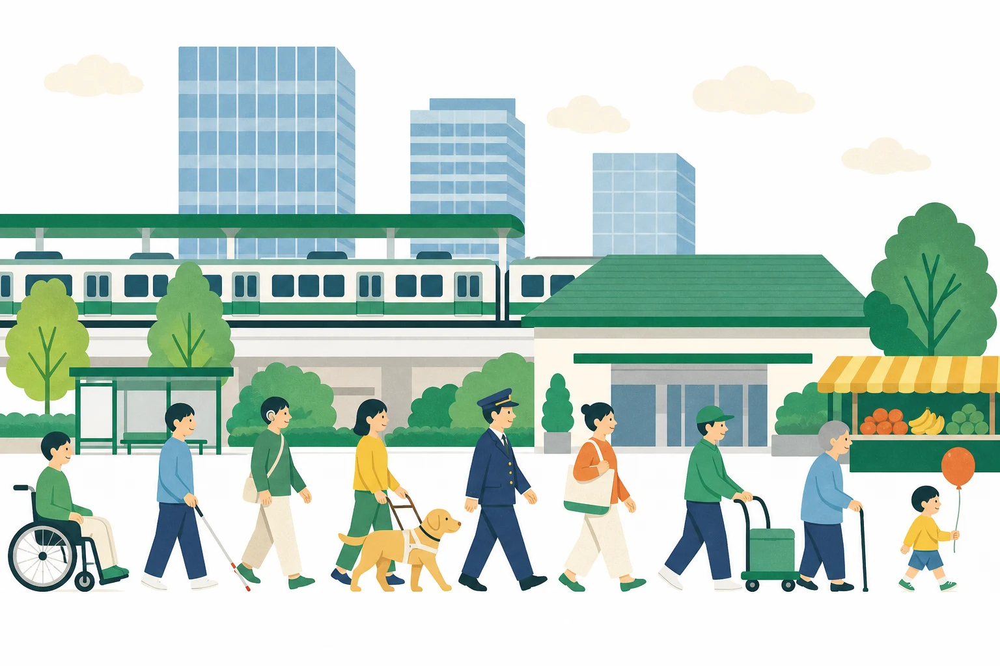
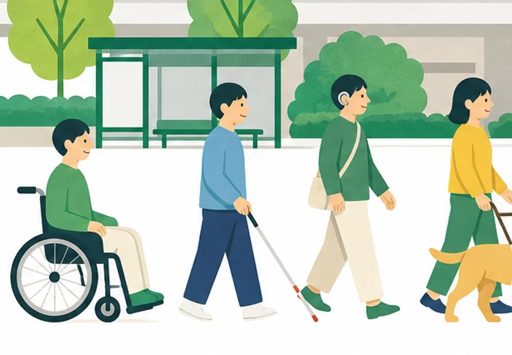
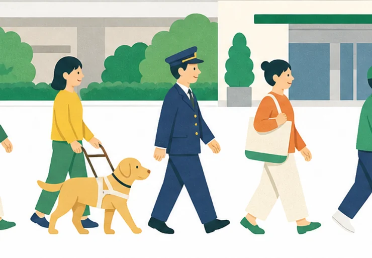
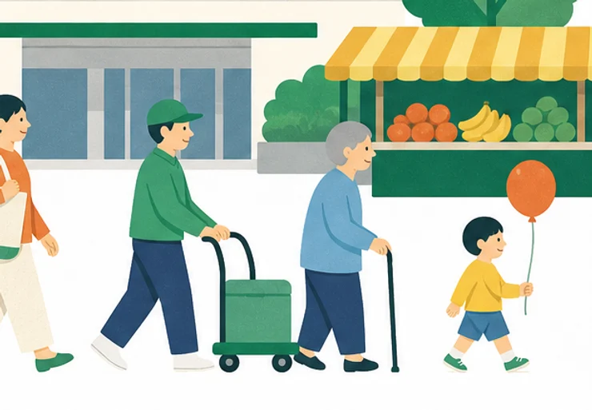
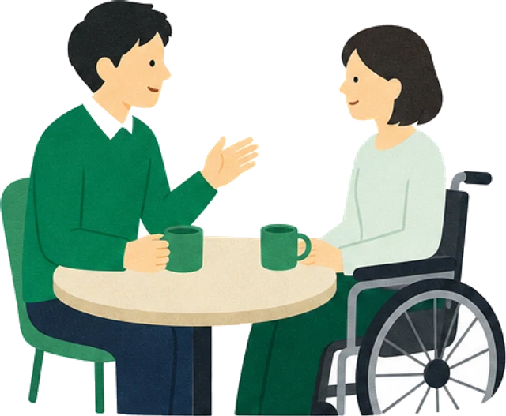
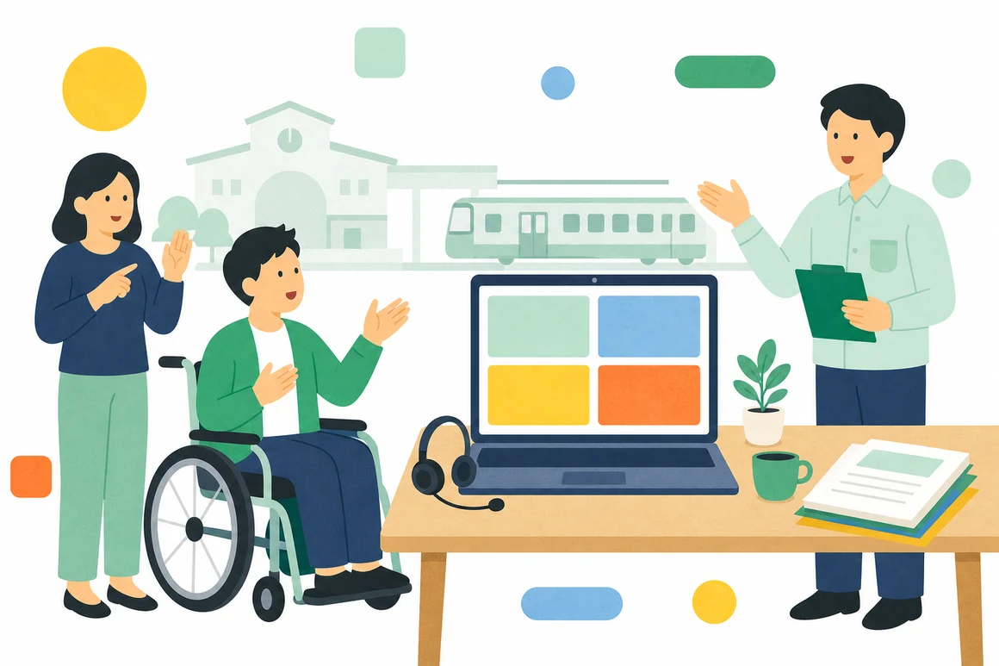

01
時間と場所の調整
通院や体調の波に合わせて、勤務時間と勤務地を決め直します。時差出勤も在宅勤務も使えます。
社員の声
- 月に二度の通院日は、午後から出勤しています。
- 繁忙期でも、残業の上限を先に決めてもらえます。
- 体調の悪い日は、業務量を減らす連絡だけで済みます。

MESSAGE はたらき方は、ひとつではありません
見え方も、聞こえ方も、体力も、集中の続く時間も、人によって違います。 碧原鉄道では、配属を決める前に必ず本人と話し、できることと むずかしいことを一つずつ確かめてから、仕事と勤務地を決めています。 入社したあとも、半年に一度は同じ話をします。
配属先を先に決めて、そこへ本人が合わせる。 その進め方はしていません。話して、見て、決める。 この三つを必ず通します。途中で「やっぱり違う」と 言ってもらってかまいません。



応募のまえに、採用担当と一度話します。履歴書の中身ではなく、いまの生活のリズムと、困っていることを聞きます。
気になった職場へ、実際に行きます。音の大きさ、床の段差、休憩室までの距離。資料では分からないところを確かめます。
本人と、受け入れる職場と、人事の三者で仕事の範囲と勤務時間を決めます。決めたことは書面にして、全員が持ちます。
配慮というのは、特別な設備を入れることだけではありません。 座る位置、連絡の手段、休憩の取り方。毎日の細かいところを、 その人に合わせて決め直していく作業です。碧原鉄道では、 それを職場ごとに話し合って決めています。

希望する職種を三つまで出してもらい、見学のあとで順位を付け直せます。入社前に決めた配属を、入社後に変えた社員も毎年います。
半年に一度、上司と人事と本人でいまの働き方を点検します。体調が変わったときは、その時点で勤務時間と業務量を組み直します。
※部署や職種によって、できる調整は変わります。
通院や体調の波に合わせて、勤務時間と勤務地を決め直します。時差出勤も在宅勤務も使えます。
社員の声
段差、明るさ、音。職場の物理的な条件を点検して、必要な機器をそろえます。
社員の声
朝礼、電話、口頭の指示。伝わり方が人によって違うので、伝える手段のほうを増やします。
社員の声
碧原鉄道で働く312名のうち、5人に話を聞きました。 うまくいっていることも、まだ足りないことも、 そのまま載せています。
応募するかどうかを決める前に、職場を見てください。 音の大きさも、床の段差も、休憩室までの距離も、 見ないと分かりません。
駅・車両基地・本社オフィスで働く社員が、一日の流れと 実際に使っている配慮をそのまま見せます。オンライン開催では 手話通訳と文字支援をつけます。会場開催は碧原中央駅の 会議室で、車いすのまま参加できます。

やりたい仕事が決まっている方と、相談しながら決めたい方で入口を分けています。 どちらを選んでも、選考の中身は同じです。
COURSE
希望する仕事を自分で選んで応募します。見学のあとで、選び直すこともできます。
COURSE
仕事を決めずに応募します。面談と見学を重ねてから、配属先を一緒に決めます。
※総合職とジョブ型に応募する場合は、職務経歴書（A4・書式自由）の提出が必要です。 ※エリア総合職は、碧原本線と湊台線の沿線から勤務地を選べます。
新卒
2027年3月に卒業見込みの方が対象です。学校の推薦は必要ありません。
選考プロセス
メールアドレスだけで登録できます。
会場受検と自宅受検を選べます。受検時間の延長を申し出られます。
配慮してほしいことを書く欄があります。書きにくければ、面談で聞き取ります。
希望する部署を一日見てから決められます。
手話通訳と文字支援を用意します。オンラインでも受けられます。
配属先と働き方を、三者で決めます。
募集要項
キャリア
社会人経験のある方が対象です。在職中の方は、日程をこちらで合わせます。
選考プロセス
メールアドレスだけで登録できます。
書式は自由です。空白期間の説明は不要です。
結果は10日以内にお伝えします。
平日の夜と土曜にも設定できます。手話通訳と文字支援を用意します。
配属候補の職場を見てから決められます。
入社日は、体調と引き継ぎに合わせて決めます。
募集要項
採用事務局に多く届く質問をまとめました。 ここにない質問は、電話かメールでお問い合わせください。
いま困っていることと、あったら助かる調整を書いてください。診断名や等級は、書きたくなければ空欄でかまいません。選考の判断材料にはしていません。
通院日はあらかじめ勤務表に入れています。時間単位の有給休暇も使えるので、半日休まずに午後から出勤している社員が多くいます。
本社と碧原中央駅、湊台駅の事務所は段差なしで入れます。それ以外の職場も、見学のときに通路の幅と休憩室までの距離を一緒に測って確かめています。
お願いできます。マイページの申込フォームで手話通訳・文字支援・筆談から選べます。費用はかかりません。当日の座席の位置も、希望があれば先に決めておきます。
できます。半年に一度の点検のほか、体調が変わったときはその時点で相談できます。勤務時間と業務量を組み直したうえで、決めたことを書面にして全員が持ちます。
参加しなくても応募できます。ただ、職場の音や明るさ、移動の距離は資料では伝わりません。迷っている方には、見学だけでもおすすめしています。日程が合わない場合は個別に設定しますので、採用事務局へご連絡ください。
セミナーに申し込む